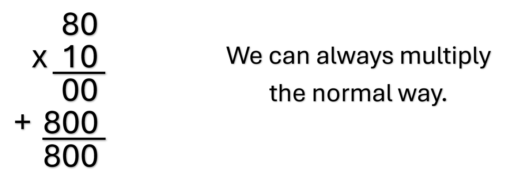
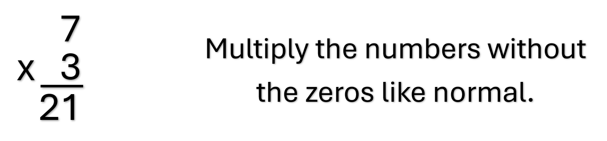
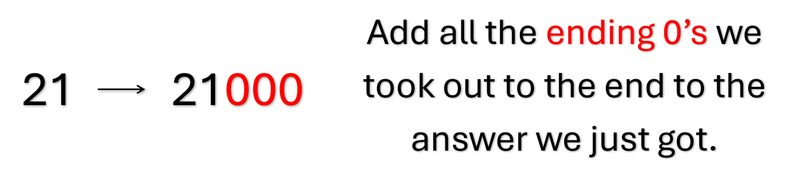
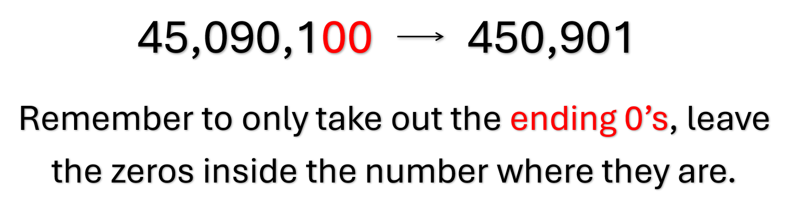
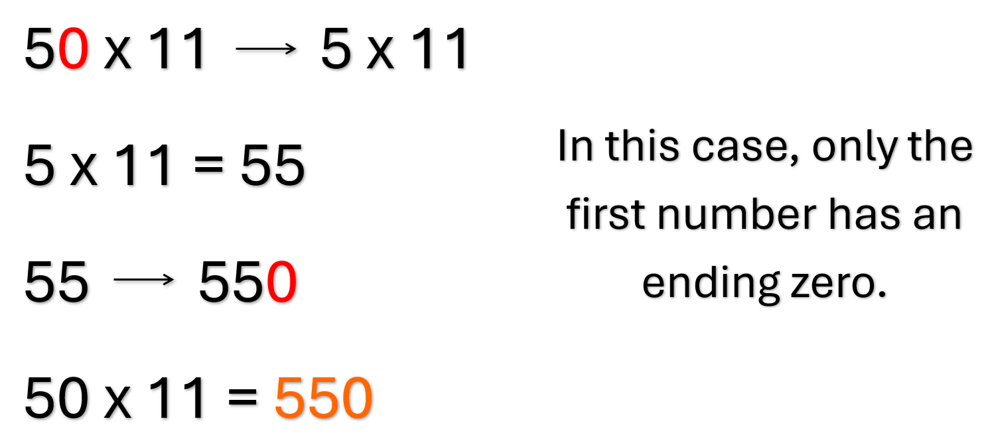
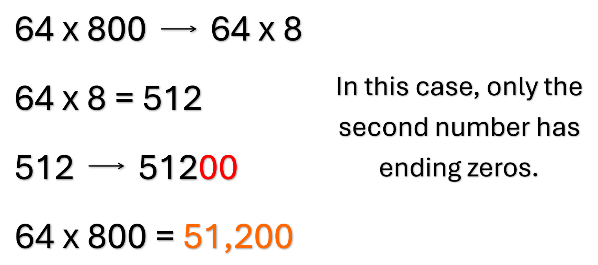

Numbers with Zeros at the End
When we're multiplying numbers with zeros at the end, like 10, 50, 270, 6,000, etc., we can always multiply like how we have been.
There is a trick we can use to make it easier though.
- For the numbers that have zeros at the end, we are going to ignore those zeros. Basically we are going to remove them from the numbers. For example 10 becomes 1, 270 becomes 27, 6,000 becomes 6.
- Multiply the numbers without the ending zeros like normal.
- Once we have the answer of that multiplication problem, bring back all the ending zeros we took out and add them back to the final answer. Just like they were the ending zeros before, we also add them to the end here. For example, say we did 10 x 4500, we took out a total of 3 zeros so in the end we add 3 zeros to the end of the answer.
- The final answer is after the zeros back.



Remember: This is only for zeros at the end of the number. Zeros inside the number don't count. For example, 5,070,800 we would only take out the zeros at the end so the number becomes 50,708.
Note: It doesn't have to be both numbers with zeros at the end for this trick to work. As long as one of the numbers have at least one zero at the end we can use this trick.

Remember: We don't have to use this trick, we can still just multiply like normal with the entire number. Taking out the ending zeros just makes it fewer digits to multiply.